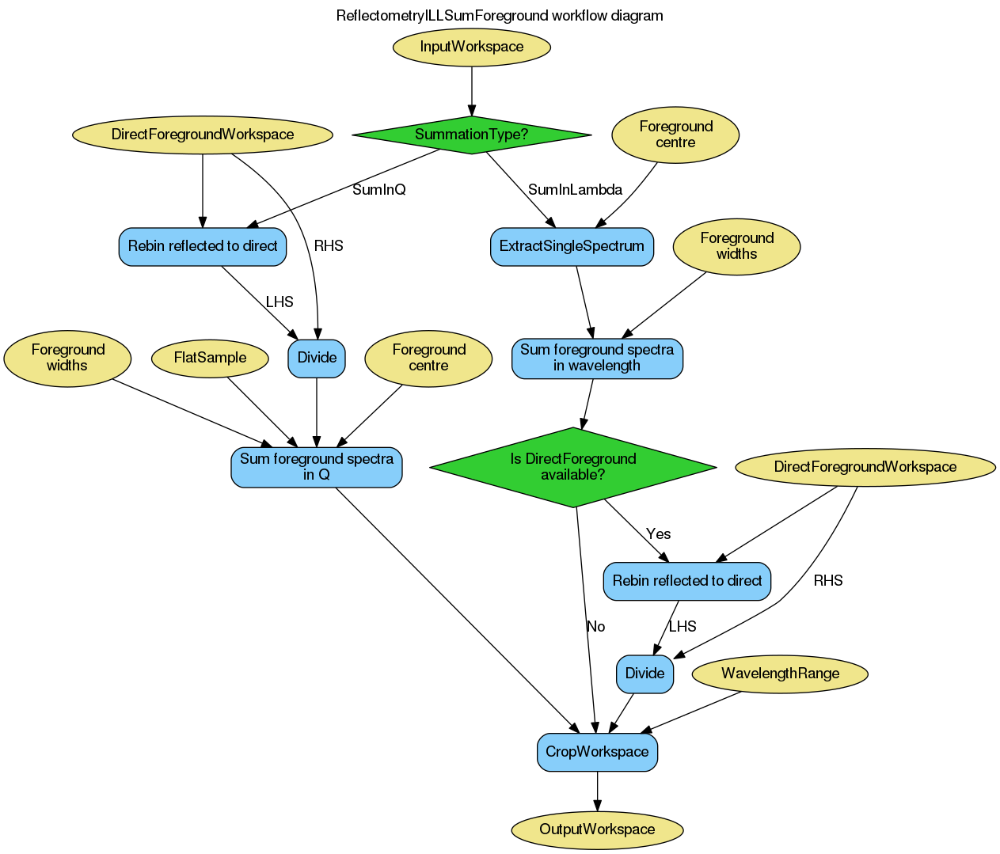

ReflectometryILLSumForeground dialog.
Table of Contents
| Name | Direction | Type | Default | Description |
|---|---|---|---|---|
| InputWorkspace | Input | MatrixWorkspace | Mandatory | An input workspace (units wavelength) to be integrated. |
| OutputWorkspace | Output | MatrixWorkspace | Mandatory | The integrated foreground divided by the summed direct beam. |
| SubalgorithmLogging | Input | string | Logging OFF | Enable or disable child algorithm logging. Allowed values: [‘Logging OFF’, ‘Logging ON’] |
| Cleanup | Input | string | Cleanup ON | Enable or disable intermediate workspace cleanup. Allowed values: [‘Cleanup ON’, ‘Cleanup OFF’] |
| SummationType | Input | string | SumInLambda | Type of summation to perform. Allowed values: [‘SumInLambda’, ‘SumInQ’] |
| FlatSample | Input | string | Flat Sample | For SumInQ option, determines if the summation should be done for a flat or bent sample. Allowed values: [‘Flat Sample’, ‘Bent Sample’] |
| DirectForegroundWorkspace | Input | MatrixWorkspace | Summed direct beam workspace if output in reflectivity is required. | |
| Foreground | Input | int list | 2147483647,2147483647,2147483647 | A three element array of foreground start, centre and end workspace indices. |
| WavelengthRange | Input | dbl list | 0 | The wavelength bounds when summing in Q. |
This algorithm is typically the second step in the reflectometry reduction workflow. It consumes the output of ReflectometryILLPreprocess, producing
The reflectivity output of this algorithm can be forwarded to ReflectometryILLConvertToQ or, in case of polarization analysis, ReflectometryILLPolarizationCor.
The following diagram gives an overview of the algorithm:
The SummationType property controls how the foreground pixels are summed.
If InputWorkspace has been processed by ReflectometryILLPreprocess, the foreground information is available in the sample logs under the entries starting with foreground.. By default these are used automatically.
The sample logs can be overriden using the Foreground property. It is a list of three integers defining the range and centre pixels as workspace indices: [start, centre, end]. The start and end values are inclusive.
Note
To run these usage examples please first download the usage data, and add these to your path. In MantidPlot this is done using Manage User Directories.
Example - Sum in wavelength
# Use same foreground and background settings for direct and reflected
# beams.
# Python dictionaries can be passed to algorithms as 'keyword arguments'.
settings = {
'ForegroundHalfWidth':[5],
'LowAngleBkgOffset': 10,
'LowAngleBkgWidth': 20,
'HighAngleBkgOffset': 10,
'HighAngleBkgWidth': 50,
}
# Direct beam
direct = ReflectometryILLPreprocess(
Run='ILL/D17/317369.nxs',
OutputBeamPositionWorkspace='direct_beam_pos', # For reflected angle calibration.
**settings
)
# We need the summed direct beam for the reflectivity
directFgd = ReflectometryILLSumForeground(direct.OutputWorkspace)
# Reflected beam
reflected = ReflectometryILLPreprocess(
Run='ILL/D17/317370.nxs',
DirectBeamPositionWorkspace='direct_beam_pos',
**settings
)
reflectivity = ReflectometryILLSumForeground(
InputWorkspace=reflected,
DirectForegroundWorkspace=directFgd,
WavelengthRange=[2, 15],
)
# Reflectivity is a single histogram
print('Histograms in reflectivity workspace: {}'.format(reflectivity.getNumberHistograms()))
# The data is still in wavelength
print('Reflectivity X unit: ' + reflectivity.getAxis(0).getUnit().unitID())
Output:
Histograms in reflectivity workspace: 1
Reflectivity X unit: Wavelength
Example - Sum in momentum transfer
# Use same foreground and background settings for direct and reflected
# beams.
# Python dictionaries can be passed to algorithms as 'keyword arguments'.
settings = {
'ForegroundHalfWidth':[5],
'LowAngleBkgOffset': 10,
'LowAngleBkgWidth': 20,
'HighAngleBkgOffset': 10,
'HighAngleBkgWidth': 50,
}
# Direct beam
direct = ReflectometryILLPreprocess(
Run='ILL/D17/317369.nxs',
OutputBeamPositionWorkspace='direct_beam_pos', # For reflected angle calibration.
**settings
)
# We need the summed direct beam for the reflectivity
directFgd = ReflectometryILLSumForeground(direct.OutputWorkspace)
# Reflected beam
reflected = ReflectometryILLPreprocess(
Run='ILL/D17/317370.nxs',
DirectBeamPositionWorkspace='direct_beam_pos',
**settings
)
reflectivity = ReflectometryILLSumForeground(
InputWorkspace=reflected,
DirectForegroundWorkspace=directFgd,
SummationType='SumInQ',
WavelengthRange=[0., 14.]
)
# Reflectivity is a single histogram
print('Histograms in reflectivity workspace: {}'.format(reflectivity.getNumberHistograms()))
# The data is still in wavelength
print('Reflectivity X unit: ' + reflectivity.getAxis(0).getUnit().unitID())
Output:
Histograms in reflectivity workspace: 1
Reflectivity X unit: Wavelength
Categories: Algorithms | ILL\Reflectometry | Workflow\Reflectometry
Python: ReflectometryILLSumForeground.py (last modified: 2018-06-21)
{kind=link}